Instrucciones
- Instalar Ruby on Rails, Ionic, y desarrollar una aplicación básica en Windows y Linux.
Requerimientos
- Conexión a internet, para poder descargar y configurar Ruby, Rails, Ionic, y la aplicación básica.
Comencemos
- Comenzaremos en Ubuntu. Lo primero que haremos será abrir una línea de comandos para instalar y configurar Ruby y Ruby on Rails. Los comandos son los siguientes: (es recomendable actualizar nuestros respositorios
antes de proceder, por medio del comando
sudo apt-get update
): - Ahora procederemos a instalar Ionic.
- Finalmente crearemos una sencilla aplicación en Ruby on Rails.
- Después de todo esto, procederemos a la instalación de todos los programas en Windows (Ruby, Rails y el resto de herramientas). Afortunadamente la instalación es muchisimo más sencilla,
y la configuración es la misma que en las últimas imagenes.
Lo primero que haremos será acceder a la siguiente liga, desde la cuál podemos descargar Ruby. Por defecto nos indicará con una pequeña flecha la versión que más nos conviene. - Posteriormente procederemos a instalar Rails, lo cuál se hará sencillamente mediante el comando en cmd
gem install rails
. - Ahora procederemos a instalar Nodejs. Para esto accederemos a la siguiente liga.
- Una vez instalado, desde la linea de comandos ingresaremos
npm install -g cordova
ynpm install -g ionic
. - Finalmente antes de proceder con la aplicación, deberemos instalar Yarn, que lo podemos encontrar en la siguiente liga.
- Ahora sí procedemos con la configuración del proyecto como lo vimos anteriormente con linux, y podremos ver la aplicación corriendo en el servidor.

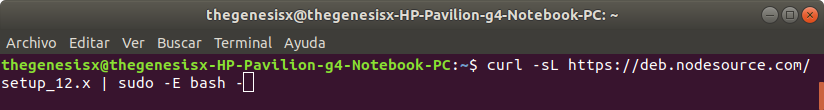
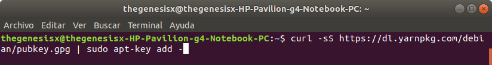
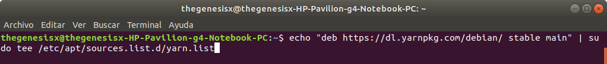
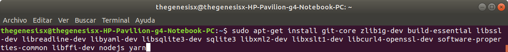
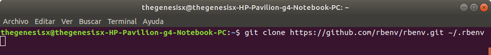
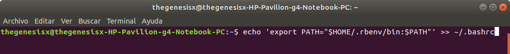
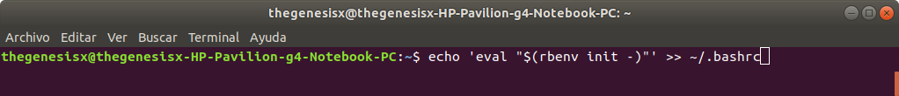
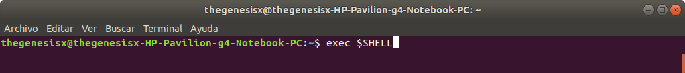
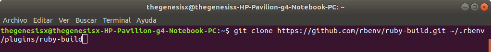
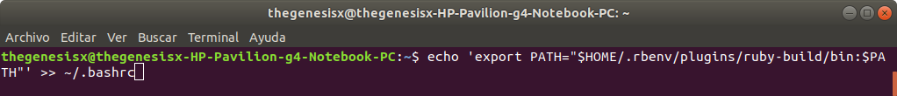
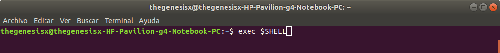
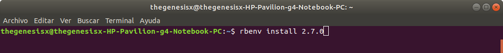
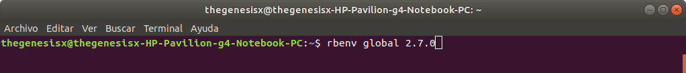
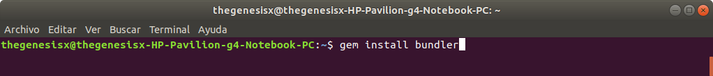
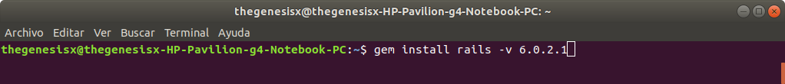
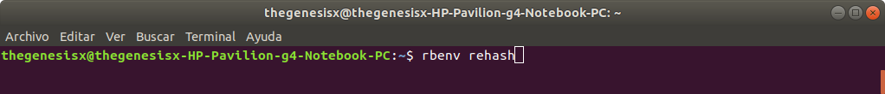
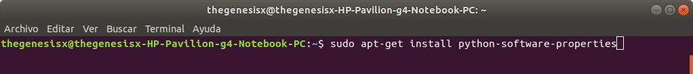
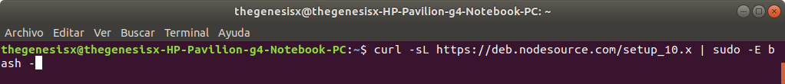
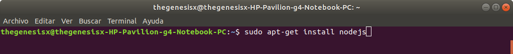
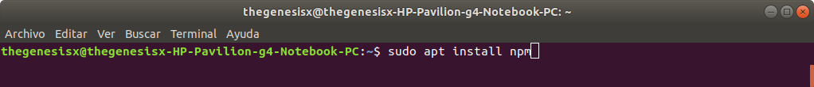
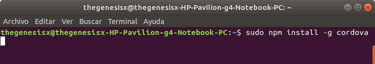
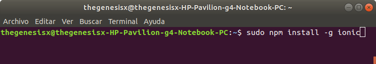
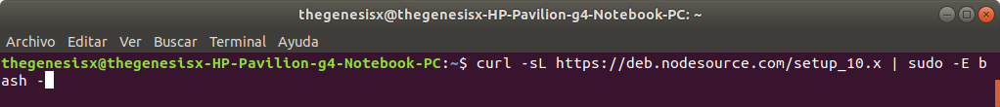
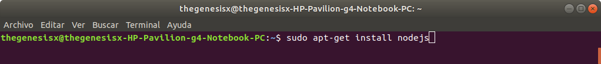
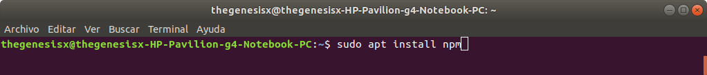
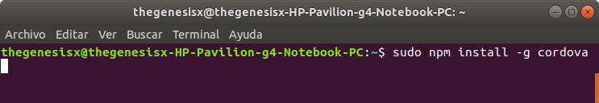
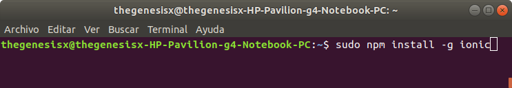
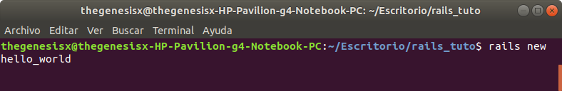
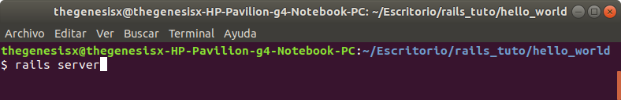
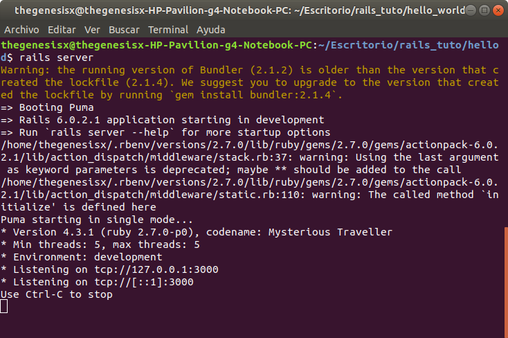
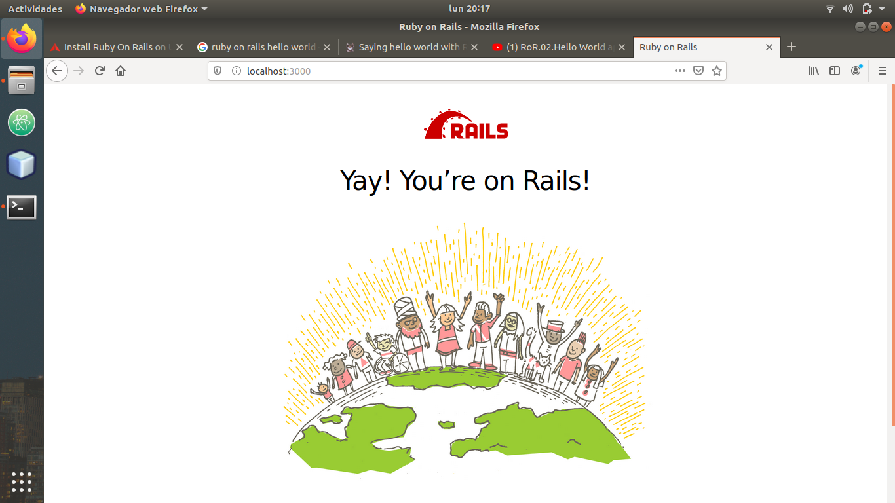
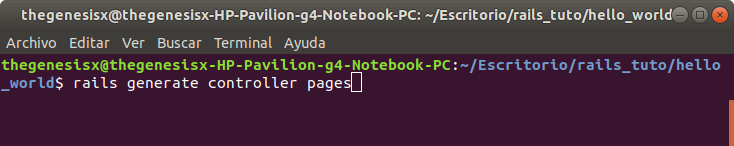
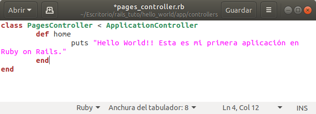
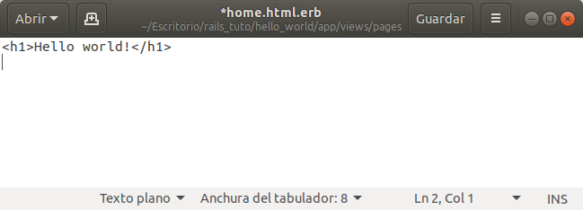
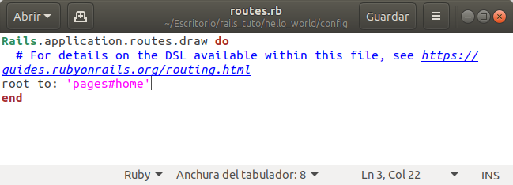
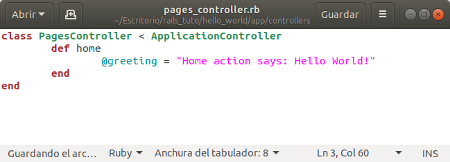
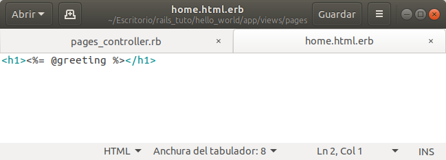
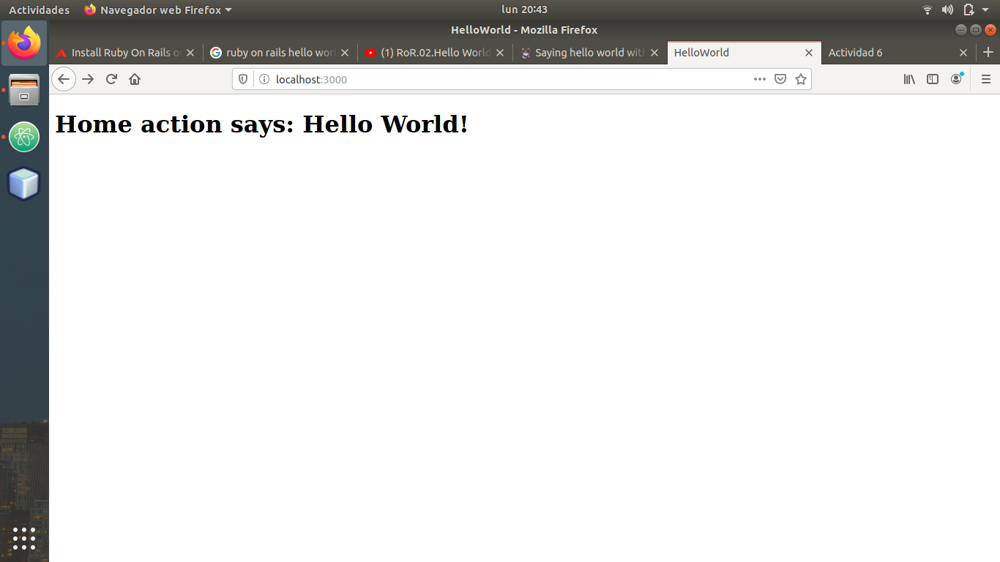
Generamos una nueva carpeta y nuestro nuevo proyecto.
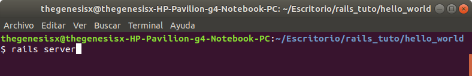
Corremos el servidor.
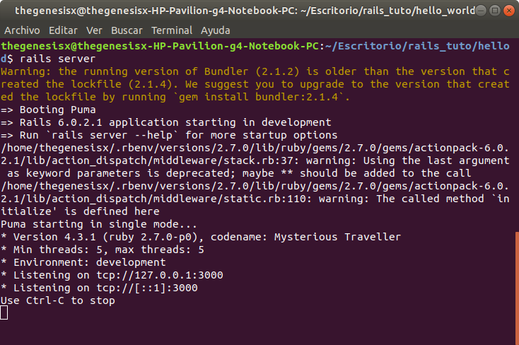
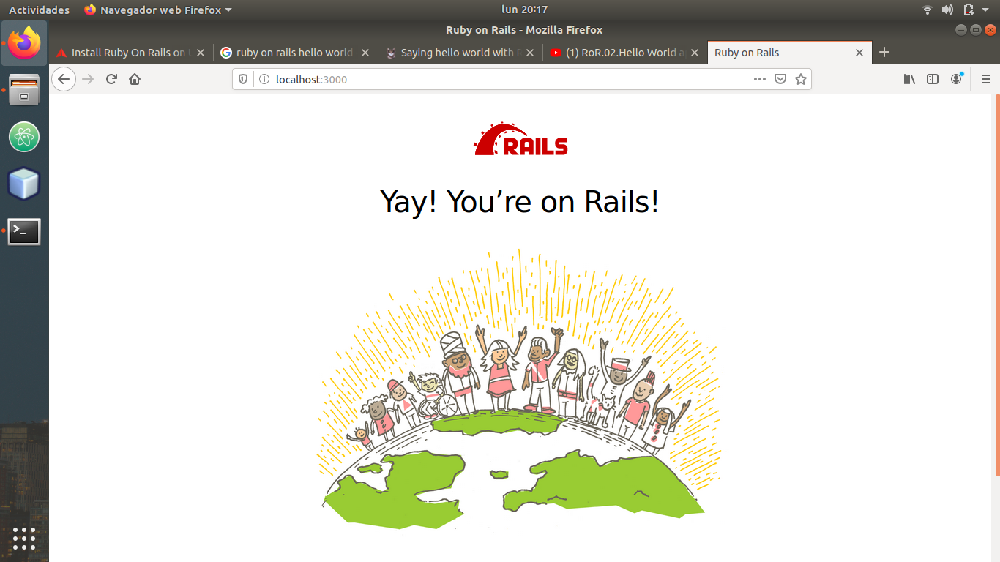
Comprobamos que corre.
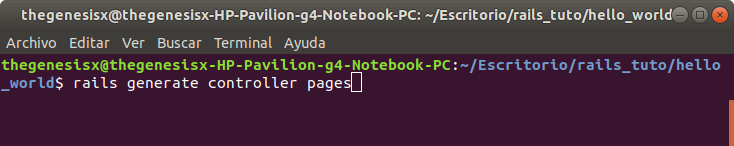
Generamos los controladores.
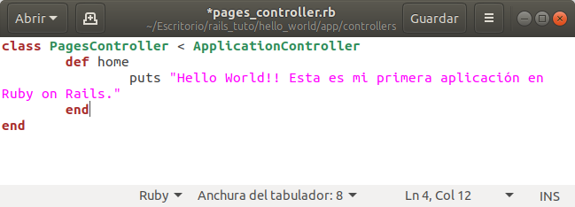
Editamos el controlador principal.
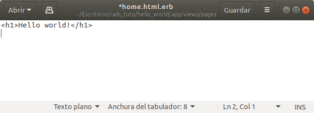
Y cambiamos la cabecera.
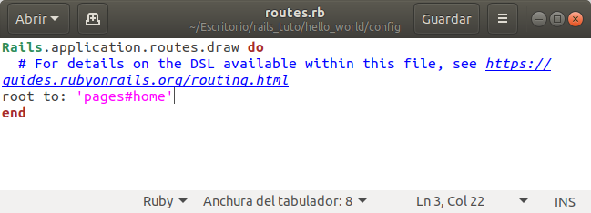
Modificamos las rutas para que se redireccione correctamente.
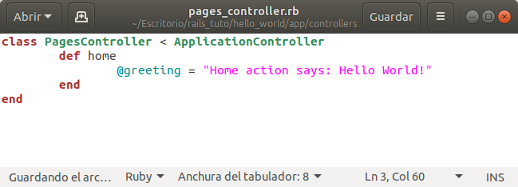
Y ahora que funciona, modificamos un poco el texto y la manera de redirección.
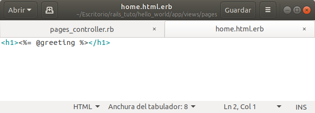
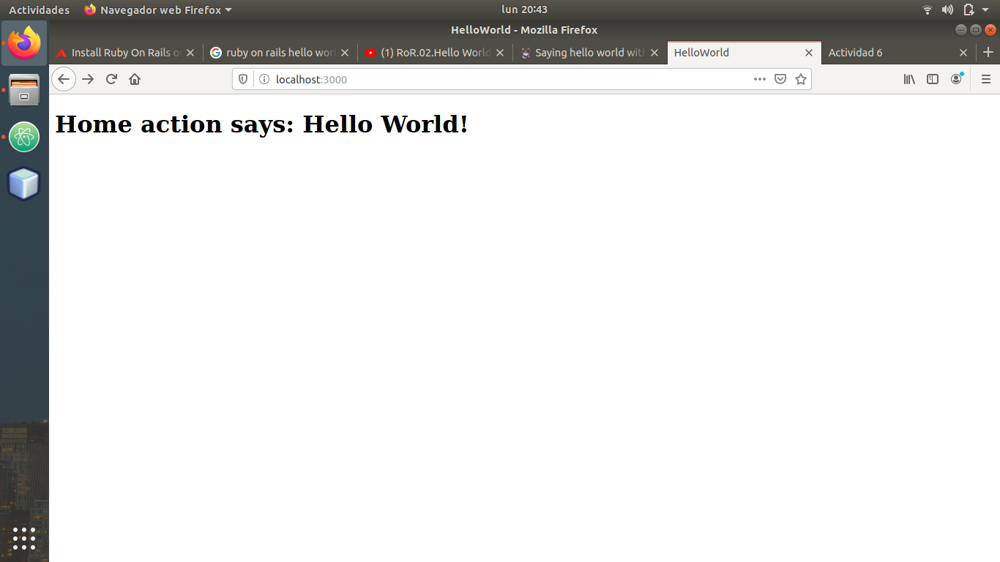
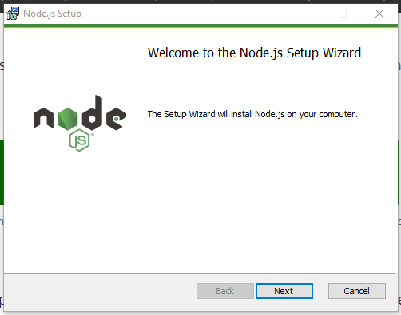
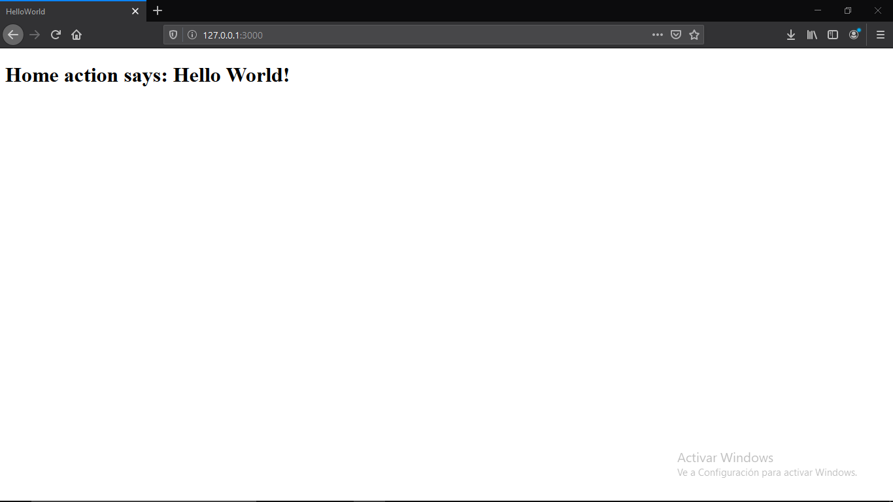